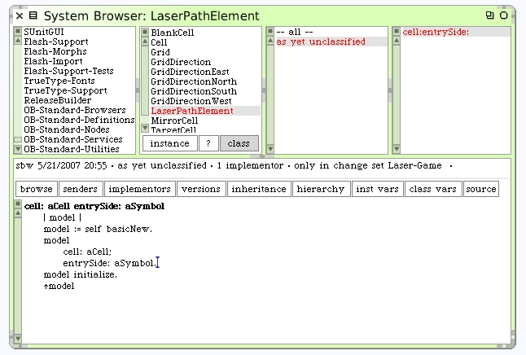
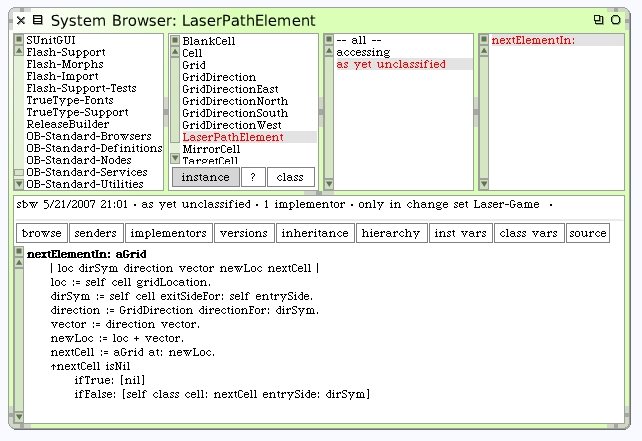
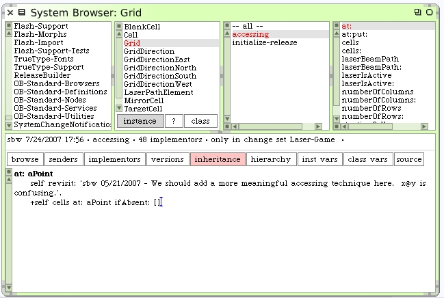

Back To The Laser Beam Path
Make a new class method that makes it easy to instantiate LaserPathElement objects.
There's enough code now that we can write the instance method that answers the next element in a grid.
There is a dependency on some behavior in Grid that is expected here. When a location is given that would be invalid for the grid, because of indexes like 0 or ones larger than the number of rows or columns. The expectation here is that the cell found would be set to nil. We should go back to the Grid code and ensure we handle this. Just add the "ifAbsent: []" code.
